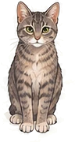
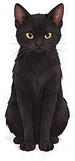

Pawlinko


Take turns with Gus and Peanut knocking toys down the climbing wall into the cat beds
Target Gold paw Helpers
Next: Peanut


Take turns with Gus and Peanut knocking toys down the climbing wall into the cat beds